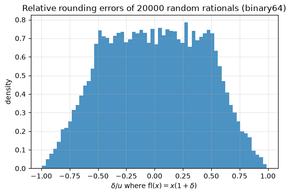
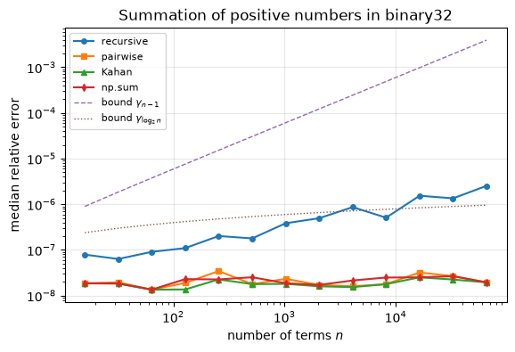
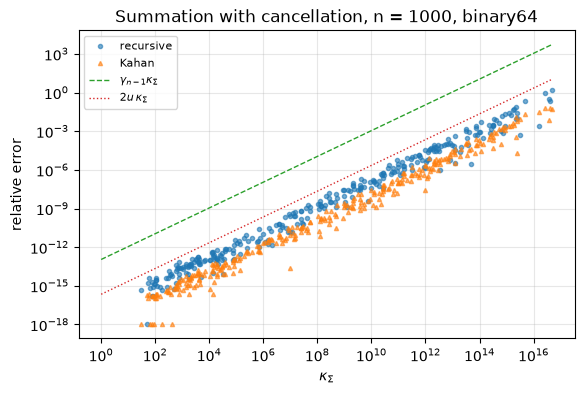
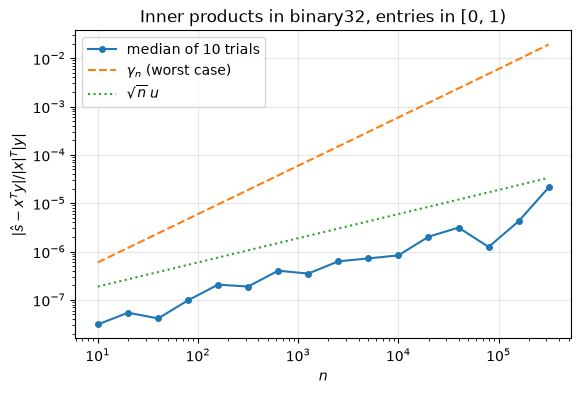
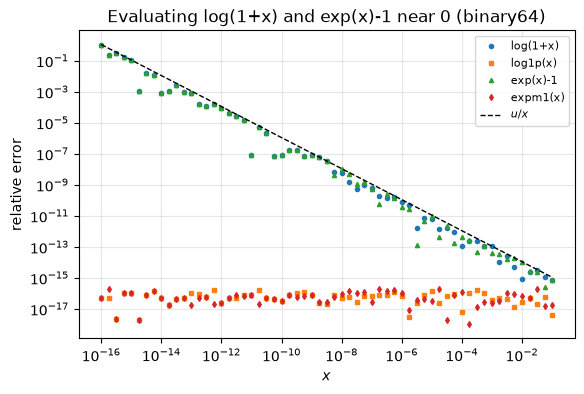

3.14. Lab 3: Floating-point arithmetic#
This notebook accompanies Chapter 3 of the notes. Every
experiment checks a statement of the chapter, and wherever possible it
measures errors exactly, with rational arithmetic from the fractions
module or with high-precision decimals, instead of comparing one
floating-point result with another.
Learning objectives. After working through this lab you should be able to
decode the sign, exponent and fraction bits of a binary64 number and explain the hidden bit and subnormal numbers;
use
np.spacing,np.nextafterandnp.finfoto explore the spacing of floating-point numbers, and explain the difference between the unit roundoff \(u = 2^{-53}\) and machine epsilon \(\epsilon_{\mathrm{mach}} = 2^{-52}\);verify the bound \(\operatorname{fl}(x) = x(1+\delta)\), \(|\delta|\le u\) with exact arithmetic and exhibit its failure in the subnormal range;
implement recursive, pairwise and compensated summation and test them against the error bounds of the chapter on well- and ill-conditioned sums;
recognize and repair cancellation, overflow and underflow.
Run the cells in order from a fresh kernel.
import math
import struct
import sys
from decimal import Decimal, localcontext, ROUND_HALF_EVEN
from fractions import Fraction
import matplotlib.pyplot as plt
import numpy as np
import scipy
import scipy.linalg as sla
rng = np.random.default_rng(20260927)
u = 2.0**-53 # unit roundoff of binary64
eps = np.finfo(float).eps # machine epsilon of binary64, 2**-52
u32 = 2.0**-24 # unit roundoff of binary32
assert eps == 2 * u and np.finfo(np.float32).eps == 2 * u32
def gamma(n, unit=u):
"""gamma_n = n u / (1 - n u), defined for n u < 1."""
assert n * unit < 1
return n * unit / (1 - n * unit)
plt.rcParams.update({"figure.figsize": (6.4, 4.0), "axes.grid": True, "grid.alpha": 0.3})
print(f"Python {sys.version.split()[0]}, NumPy {np.__version__}, SciPy {scipy.__version__}")
print(f"u = 2^-53 = {u:.4e}, eps_mach = np.finfo(float).eps = {eps:.4e}")
Python 3.14.3, NumPy 2.5.3, SciPy 1.18.1
u = 2^-53 = 1.1102e-16, eps_mach = np.finfo(float).eps = 2.2204e-16
3.14.1. 1. Anatomy of a binary64 number#
A binary64 number is stored in 64 bits: one sign bit, an 11-bit biased
exponent field \(E\) and a 52-bit fraction field \(f\). For \(1\le E\le 2046\) the
value is \((-1)^s\,(1.f)_2\times 2^{E-1023}\): the leading \(1\) is the hidden
bit, which is not stored. So binary64 has 52 stored fraction bits and 53 bits
of precision. The field \(E = 0\) encodes zero and the subnormal numbers
\((-1)^s(0.f)_2\times2^{-1022}\), and \(E = 2047\) encodes infinities and NaNs.
The function below extracts the three fields with struct and reconstructs
the value from them.
def fields(x):
"""Return (sign, biased exponent E, fraction f as an integer) of a binary64 number."""
(bits,) = struct.unpack(">Q", struct.pack(">d", x))
return bits >> 63, (bits >> 52) & 0x7FF, bits & ((1 << 52) - 1)
def value_from_fields(s, E, f):
"""Exact value (as a Fraction) of a finite binary64 number with the given fields."""
if E == 0: # zero or subnormal: no hidden bit
mag = Fraction(f, 2**52) * Fraction(2) ** -1022
else: # normalized: hidden bit 1
mag = (1 + Fraction(f, 2**52)) * Fraction(2) ** (E - 1023)
return -mag if s else mag
print(f"{'x':>24s} s E e=E-1023 fraction (52 bits, hex)")
for x in [1.0, 0.1, -2.5, 2.0**-1074, float(np.finfo(float).tiny), float(np.finfo(float).max), math.inf, math.nan]:
s, E, f = fields(x)
print(f"{x!r:>24s} {s} {E:4d} {E - 1023:8d} {f:013x}")
if E != 2047:
assert value_from_fields(s, E, f) == Fraction(x) # exact reconstruction
x s E e=E-1023 fraction (52 bits, hex)
1.0 0 1023 0 0000000000000
0.1 0 1019 -4 999999999999a
-2.5 1 1024 1 4000000000000
5e-324 0 0 -1023 0000000000001
2.2250738585072014e-308 0 1 -1022 0000000000000
1.7976931348623157e+308 0 2046 1023 fffffffffffff
inf 0 2047 1024 0000000000000
nan 0 2047 1024 8000000000000
The fraction of \(0.1\) is 999999999999a: the repeating binary pattern
\(1001\,1001\ldots\) has been rounded up in its last place, as in
Example 3.2. The smallest subnormal number \(2^{-1074}\) has
\(E = 0\) and fraction \(1\). np.frexp gives another normalization,
\(x = m\cdot2^k\) with \(0.5\le|m|<1\), which differs from the IEEE convention
by one in the exponent.
m, k = np.frexp(0.1)
print(f"np.frexp(0.1) = ({m!r}, {k}); IEEE exponent e = {fields(0.1)[1] - 1023}")
print("stored value of 0.1 :", Decimal(0.1))
rel = (Fraction(0.1) - Fraction(1, 10)) / Fraction(1, 10)
print("relative error of fl(0.1) =", rel, "= 2^-54:", rel == Fraction(1, 2**54))
print("0.1 + 0.2 =", repr(0.1 + 0.2), " equal to 0.3?", 0.1 + 0.2 == 0.3)
np.frexp(0.1) = (np.float64(0.8), -3); IEEE exponent e = -4
stored value of 0.1 : 0.1000000000000000055511151231257827021181583404541015625
relative error of fl(0.1) = 1/18014398509481984 = 2^-54: True
0.1 + 0.2 = 0.30000000000000004 equal to 0.3? False
The precision is 53 bits, so every integer up to \(2^{53}\) is a binary64 number, but \(2^{53}+1\) is not: it lies halfway between \(2^{53}\) and \(2^{53}+2\) and rounds to the even neighbor \(2^{53}\).
print("float(2**53 + 1) == 2**53:", float(2**53 + 1) == 2.0**53)
assert float(2**53 + 1) == 2.0**53 and float(2**53 - 1) == 2**53 - 1
float(2**53 + 1) == 2**53: True
np.finfo reports the parameters of each format. nmant is the number of
stored fraction bits, so the precision is nmant + 1. (NumPy’s maxexp is
\(e_{\max}+1\).) NumPy has no bfloat16 type; its parameters are \(p = 8\),
\(e_{\min} = -126\), \(e_{\max} = 127\).
print(f"{'format':>8s} {'p':>3s} {'u = 2^-p':>10s} {'eps_mach':>10s} {'x_min':>10s} {'min subnormal':>14s} {'x_max':>10s}")
for t in (np.float16, np.float32, np.float64):
fi = np.finfo(t)
p = fi.nmant + 1
print(f"{t.__name__:>8s} {p:3d} {2.0**-p:10.3e} {float(fi.eps):10.3e} {float(fi.tiny):10.3e} "
f"{float(fi.smallest_subnormal):14.3e} {float(fi.max):10.3e}")
assert float(fi.eps) == 2.0 ** (1 - p) # eps_mach = 2 u
assert float(fi.max) == (2 - 2.0 ** (1 - p)) * 2.0 ** (fi.maxexp - 1)
bf16_max = (2 - 2.0**-7) * 2.0**127
print(f"{'bfloat16':>8s} {8:3d} {2.0**-8:10.3e} {2.0**-7:10.3e} {2.0**-126:10.3e} {2.0**-133:14.3e} {bf16_max:10.3e}")
format p u = 2^-p eps_mach x_min min subnormal x_max
float16 11 4.883e-04 9.766e-04 6.104e-05 5.960e-08 6.550e+04
float32 24 5.960e-08 1.192e-07 1.175e-38 1.401e-45 3.403e+38
float64 53 1.110e-16 2.220e-16 2.225e-308 4.941e-324 1.798e+308
bfloat16 8 3.906e-03 7.812e-03 1.175e-38 9.184e-41 3.390e+38
3.14.2. 2. Spacing of floating-point numbers and machine epsilon#
In the binade \([2^e, 2^{e+1})\) binary64 numbers are spaced \(\operatorname{ulp} = 2^{e-52}\) apart, so the relative spacing \(\operatorname{ulp}(x)/|x|\) lies in \((u, 2u]\) (equation (3.3)). We check this for numbers spread over the whole normal range.
x = np.exp(rng.uniform(np.log(1e-300), np.log(1e300), 100_000))
rel_spacing = np.spacing(x) / x
print(f"relative spacing / u: min {rel_spacing.min() / u:.6f}, max {rel_spacing.max() / u:.6f}")
assert np.all(rel_spacing > u) and np.all(rel_spacing <= 2 * u)
print("neighbors of 1:", repr(np.nextafter(1.0, 0.0)), repr(np.nextafter(1.0, 2.0)))
assert np.nextafter(1.0, 0.0) == 1 - u and np.nextafter(1.0, 2.0) == 1 + eps
assert np.spacing(1.0) == eps
relative spacing / u: min 1.000006, max 1.999999
neighbors of 1: np.float64(0.9999999999999999) np.float64(1.0000000000000002)
At a power of two the gap below is half the gap above. Now the facts of Proposition 3.1. The number \(1+2^{-53}\) is exactly halfway between \(1\) and \(1+2^{-52}\), and round to nearest ties to even chooses \(1\), whose last significand bit is \(0\).
print("1 + 2**-53 > 1 :", 1 + 2**-53 > 1)
print("1 + 2**-52 > 1 :", 1 + 2**-52 > 1)
e_small = np.nextafter(2.0**-53, 1.0) # the next float after 2^-53
print("next float after 2^-53 equals 2^-53 + 2^-105:", e_small == 2.0**-53 + 2.0**-105)
print("1 + (2^-53 + 2^-105) == 1 + 2^-52:", 1 + e_small == 1 + eps)
assert (1 + 2**-53 == 1) and (1 + e_small == 1 + eps)
# Ties to even can also round up: 1 + 2^-52 has an odd last bit.
print("(1 + 2^-52) + 2^-53 == 1 + 2^-51:", (1 + eps) + u == 1 + 2 * eps)
# Addition is not associative.
print("(1 + u) + u =", repr((1 + u) + u), " 1 + (u + u) =", repr(1 + (u + u)))
assert (1 + u) + u == 1 and 1 + (u + u) == 1 + eps
1 + 2**-53 > 1 : False
1 + 2**-52 > 1 : True
next float after 2^-53 equals 2^-53 + 2^-105: True
1 + (2^-53 + 2^-105) == 1 + 2^-52: True
(1 + 2^-52) + 2^-53 == 1 + 2^-51: True
(1 + u) + u = 1.0 1 + (u + u) = 1.0000000000000002
The legacy version of this course computed machine epsilon with the loop below and claimed that it finds “the smallest \(\epsilon\) with \(\operatorname{fl}(1+\epsilon)>1\).” The loop does return \(2^{-52}\), but only because it tests powers of two; the smallest floating-point \(\epsilon\) with that property is \(2^{-53}+2^{-105}\), which is not a power of two.
eps_loop = 1.0
while 1.0 + eps_loop / 2 > 1.0:
eps_loop /= 2
print("halving loop returns", eps_loop, "= 2^-52:", eps_loop == 2.0**-52)
assert eps_loop == eps
halving loop returns 2.220446049250313e-16 = 2^-52: True
Two conventions are in use: this book (like Higham, and like
Trefethen and Bau’s \(\epsilon_{\text{machine}}\)) bounds the relative
rounding error by \(u = 2^{-53}\), while np.finfo(float).eps, MATLAB’s eps
and C’s DBL_EPSILON are \(\epsilon_{\mathrm{mach}} = 2u = 2^{-52}\).
3.14.3. 3. Rounding errors measured exactly#
Theorem 3.1 says that for \(x\) in the normal range,
\(\operatorname{fl}(x) = x(1+\delta)\) with \(|\delta|\le u\). Python’s float(Fraction)
divides two integers with correct rounding, so we can generate random
rational numbers \(q\) of many magnitudes, round them, check that the result
is really the nearest float (by comparing with both neighbors), and compute
\(\delta\) exactly.
def rel_err_exact(computed, exact):
"""Exact relative error (as a float) of a float against a Fraction."""
return float((Fraction(computed) - exact) / exact)
deltas = []
for _ in range(20_000):
q = Fraction(int(rng.integers(1, 2**62)), int(rng.integers(1, 2**62))) * Fraction(2) ** int(rng.integers(-950, 950))
f = float(q)
lo, hi = np.nextafter(f, 0.0), np.nextafter(f, math.inf)
assert abs(Fraction(f) - q) <= abs(Fraction(lo) - q) and abs(Fraction(f) - q) <= abs(Fraction(hi) - q)
deltas.append(rel_err_exact(f, q))
deltas = np.array(deltas)
print(f"max |delta| / u = {np.max(np.abs(deltas)) / u:.6f}")
assert np.max(np.abs(deltas)) <= u # Theorem: |delta| <= u in the normal range
fig, ax = plt.subplots()
ax.hist(deltas / u, bins=60, density=True, alpha=0.8)
ax.set_xlabel(r"$\delta / u$ where $\mathrm{fl}(x) = x(1+\delta)$")
ax.set_ylabel("density")
ax.set_title("Relative rounding errors of 20000 random rationals (binary64)")
plt.show()
max |delta| / u = 0.994410

The errors fill \([-u, u]\) and never leave it. The density is not uniform: relative errors near \(\pm u\) occur only for numbers just above a power of two, where the relative spacing is largest (the sawtooth of Figure 3.1).
The standard model. For floating-point operands, IEEE 754 requires the result of \(+,-,\times,\div\) to be the correctly rounded exact result. We check \(|\delta|\le u\) for each operation with exact rational arithmetic, and for the square root we check correct rounding directly: \(x\) must lie between the squares of the midpoints of \(r = \operatorname{fl}(\sqrt x)\) and its two neighbors.
def random_floats(size):
return rng.standard_normal(size) * 10.0 ** rng.integers(-100, 100, size)
X, Y = random_floats(5000), random_floats(5000)
worst = {}
for name, op in [("+", np.add), ("-", np.subtract), ("*", np.multiply), ("/", np.divide)]:
exact_op = {"+": lambda a, b: a + b, "-": lambda a, b: a - b,
"*": lambda a, b: a * b, "/": lambda a, b: a / b}[name]
errs = [abs(rel_err_exact(op(x, y), exact_op(Fraction(x), Fraction(y)))) for x, y in zip(X, Y)]
worst[name] = max(errs) / u
assert max(errs) <= u
for x in np.abs(X[:2000]):
r = math.sqrt(x)
mid_lo = (Fraction(r) + Fraction(np.nextafter(r, 0.0))) / 2
mid_hi = (Fraction(r) + Fraction(np.nextafter(r, math.inf))) / 2
assert mid_lo**2 <= Fraction(x) <= mid_hi**2 # r is the nearest float to sqrt(x)
print("max |delta|/u per operation:", {k: round(v, 4) for k, v in worst.items()}, "; sqrt correctly rounded")
max |delta|/u per operation: {'+': 0.968, '-': 0.9776, '*': 0.9965, '/': 0.9957} ; sqrt correctly rounded
Failure in the subnormal range. Below \(x_{\min} = 2^{-1022}\) the numbers are spaced \(2^{-1074}\) apart, so the absolute error of rounding is at most \(2^{-1075}\) (Theorem 3.2) but the relative error can be large.
for q in [3 * Fraction(2) ** -1076, Fraction(2) ** -1075, Fraction(7, 10) * Fraction(2) ** -1070]:
f = float(q)
print(f"x = {float(q * 2**1074):.4f} * 2^-1074 -> fl(x) = {f!r:>10s}, relative error {abs(rel_err_exact(f, q)):.4f}")
assert float(3 * Fraction(2) ** -1076) == 2.0**-1074 and float(Fraction(2) ** -1075) == 0.0
tiny_q = [Fraction(int(rng.integers(1, 2**60)), 2**60) * Fraction(2) ** -1022 for _ in range(2000)]
abs_errs = [abs(Fraction(float(q)) - q) for q in tiny_q]
assert max(abs_errs) <= Fraction(2) ** -1075 # |eta| <= 2^(e_min - p)
print("max absolute error in the subnormal range / 2^-1075 =", float(max(abs_errs) / Fraction(2) ** -1075))
x = 0.7500 * 2^-1074 -> fl(x) = 5e-324, relative error 0.3333
x = 0.5000 * 2^-1074 -> fl(x) = 0.0, relative error 1.0000
x = 11.2000 * 2^-1074 -> fl(x) = 5.4e-323, relative error 0.0179
max absolute error in the subnormal range / 2^-1075 = 1.0
3.14.4. 4. Special values#
Overflow happens when the exact result reaches \(x_{\max}\) plus half an ulp:
\(x_{\max} + 2^{970}\) is a tie between \(x_{\max}\) (odd last bit) and
\(2^{1024}\) and becomes inf, while \(x_{\max}+2^{969}\) rounds back to
\(x_{\max}\). NumPy signals exceptions as warnings, which we silence
explicitly with np.errstate; plain Python floats raise an exception on
division by zero.
xmax = np.finfo(float).max
with np.errstate(over="ignore", invalid="ignore", divide="ignore"):
print("xmax + 2^970 =", np.float64(xmax) + 2.0**970, " xmax + 2^969 =", np.float64(xmax) + 2.0**969)
assert np.isinf(np.float64(xmax) + 2.0**970) and np.float64(xmax) + 2.0**969 == xmax
one, zero, inf = np.float64(1.0), np.float64(0.0), np.float64(np.inf)
print("1/+0 =", one / zero, " 1/-0 =", one / -zero, " inf - inf =", inf - inf,
" 0 * inf =", zero * inf, " 0/0 =", zero / zero)
nan = float("nan")
print("nan == nan:", nan == nan, " nan != nan:", nan != nan, " +0 == -0:", 0.0 == -0.0,
" copysign(1, -0.0) =", math.copysign(1, -0.0))
try:
1.0 / 0.0
except ZeroDivisionError as err:
print("plain Python:", type(err).__name__, "-", err)
xmax + 2^970 = inf xmax + 2^969 = 1.7976931348623157e+308
1/+0 = inf 1/-0 = -inf inf - inf = nan 0 * inf = nan 0/0 = nan
nan == nan: False nan != nan: True +0 == -0: True copysign(1, -0.0) = -1.0
plain Python: ZeroDivisionError - division by zero
Gradual underflow. Lemma 3.1 says that sums and differences smaller than \(2x_{\min}\) in magnitude are exact. In particular \(x\ne y\) implies \(\operatorname{fl}(x-y)\ne0\).
xmin = np.finfo(float).tiny
a = xmin * (1 + rng.integers(0, 2**20, 5000) * eps) # floats just above x_min
b = np.nextafter(a, 0.0) # their lower neighbors
d = a - b
assert np.all(d != 0) and np.all(d == 2.0**-1074) # exact: the gap is one subnormal step
c = rng.uniform(-2, 2, 5000) * xmin
e = rng.uniform(-2, 2, 5000) * xmin
small = np.abs(c + e) < 2 * xmin
assert all(Fraction(float(s)) == Fraction(float(p)) + Fraction(float(q))
for s, p, q in zip((c + e)[small], c[small], e[small]))
print(f"{small.sum()} sums below 2 x_min checked: all exact; all differences of neighbors are 2^-1074")
3767 sums below 2 x_min checked: all exact; all differences of neighbors are 2^-1074
3.14.5. 5. The \(\gamma_n\) lemma#
Lemma 3.3 bounds \(\prod_{i=1}^n(1+\delta_i)^{\pm1} - 1\) by \(\gamma_n = nu/(1-nu)\). The worst case is \(\delta_i = -u\) with exponent \(-1\) for all \(i\), which gives exactly \((1-u)^{-n}-1\). We compute these products exactly and compare with \(\gamma_n\).
U = Fraction(1, 2**53)
for n in (1, 10, 100, 1000):
worst_case = (1 - U) ** -n - 1 # delta_i = -u, all exponents -1
print(f"n = {n:4d}: (1-u)^-n - 1 = {float(worst_case):.6e}, gamma_n = {gamma(n):.6e}, "
f"ratio {float(worst_case) / gamma(n):.12f}")
assert worst_case <= n * U / (1 - n * U)
# random signs and exponents
for trial in range(200):
n = int(rng.integers(1, 60))
th = Fraction(1)
for _ in range(n):
delta = Fraction(int(rng.integers(-2**20, 2**20)), 2**20) * U
th *= (1 + delta) if rng.random() < 0.5 else 1 / (1 + delta)
assert abs(th - 1) <= n * U / (1 - n * U)
print("200 random products satisfy |theta_n| <= gamma_n")
n = 1: (1-u)^-n - 1 = 1.110223e-16, gamma_n = 1.110223e-16, ratio 1.000000000000
n = 10: (1-u)^-n - 1 = 1.110223e-15, gamma_n = 1.110223e-15, ratio 1.000000000000
n = 100: (1-u)^-n - 1 = 1.110223e-14, gamma_n = 1.110223e-14, ratio 1.000000000000
n = 1000: (1-u)^-n - 1 = 1.110223e-13, gamma_n = 1.110223e-13, ratio 1.000000000000
200 random products satisfy |theta_n| <= gamma_n
The ratio of the worst case to \(\gamma_n\) is \(1\) to many digits: the lemma is sharp to first order, and \(\gamma_n\approx nu\) whenever \(nu\ll1\).
3.14.6. 6. Summation#
We implement the three algorithms of Section 3.5. Python’s
built-in sum is not used for recursive summation: since Python 3.12 it
uses a more accurate compensated algorithm for floats. The exact reference
is math.fsum, which returns the correctly rounded exact sum; we first
confirm this against rational arithmetic.
def recursive_sum(x):
s = 0.0
for xi in x:
s += xi
return s
def pairwise_sum(x):
n = len(x)
if n == 1:
return x[0]
m = n // 2
return pairwise_sum(x[:m]) + pairwise_sum(x[m:])
def kahan_sum(x):
s, c = 0.0, 0.0
for xi in x:
y = xi - c
t = s + y
c = (t - s) - y # rounding error of t (exact when |s| >= |y|)
s = t
return s
def exact_sum(x):
return sum((Fraction(v) for v in x), Fraction(0))
for trial in range(20):
x = list(rng.standard_normal(500) * 10.0 ** rng.integers(-8, 8, 500))
assert math.fsum(x) == float(exact_sum(x))
print("math.fsum agrees with the correctly rounded exact sum in 20 tests")
math.fsum agrees with the correctly rounded exact sum in 20 tests
Worked example (Example 3.3). For \(x = (1,u,u,u,u)\) the order of summation decides whether the result is exact.
x = [1.0] + [u] * 4
fwd, bwd = recursive_sum(x), recursive_sum(x[::-1])
print(f"forward: {fwd!r} backward: {bwd!r} exact: 1 + 4u = {1 + 4 * u!r}")
err = exact_sum(x) - Fraction(fwd)
bound = gamma(4) * math.fsum(abs(v) for v in x)
print(f"forward error = {float(err / U):.1f} u, bound gamma_4 * sum|x_i| = {bound / u:.10f} u")
assert fwd == 1.0 and bwd == 1 + 4 * u and float(err) <= bound
forward: 1.0 backward: 1.0000000000000004 exact: 1 + 4u = 1.0000000000000004
forward error = 4.0 u, bound gamma_4 * sum|x_i| = 4.0000000000 u
An ill-conditioned sum. For \(x = (10^{16}, 1, -10^{16})\) the condition number is \(\kappa_\Sigma = 2\times10^{16}+1\). Recursive and compensated summation both return \(0\) instead of \(1\): the compensation cannot recover a digit that the first addition has already rounded away, exactly as the bound \((2u + O(nu^2))\kappa_\Sigma\) allows.
x = [1e16, 1.0, -1e16]
print("recursive:", recursive_sum(x), " pairwise:", pairwise_sum(x), " Kahan:", kahan_sum(x),
" math.fsum:", math.fsum(x))
print(f"Python {sys.version.split()[0]} built-in sum: {sum(x)} (compensated since Python 3.12)")
assert recursive_sum(x) == 0.0 and kahan_sum(x) == 0.0 and math.fsum(x) == 1.0
recursive: 0.0 pairwise: 0.0 Kahan: 0.0 math.fsum: 1.0
Python 3.14.3 built-in sum: 1.0 (compensated since Python 3.12)
Experiment: error against \(n\). To see the growth with \(n\) at moderate
sizes we work in binary32, where \(u = 2^{-24}\approx5.96\times10^{-8}\), with
positive terms uniformly distributed in \([0,1)\) (\(\kappa_\Sigma = 1\)). NumPy’s
binary32 random numbers are multiples of \(2^{-24}\), so the exact sums are
integers times \(2^{-24}\) and can be computed exactly in 64-bit integer
arithmetic. np.cumsum adds sequentially, which is recursive summation; the
Kahan and pairwise versions below are vectorized over several independent
sequences.
def kahan_rows(X):
"""Kahan summation of each row of X in the precision of X."""
s = np.zeros(X.shape[0], dtype=X.dtype)
c = np.zeros(X.shape[0], dtype=X.dtype)
for i in range(X.shape[1]):
y = X[:, i] - c
t = s + y
c = (t - s) - y
s = t
return s
def pairwise_rows(X):
"""Pairwise summation of each row; the row length must be a power of 2."""
while X.shape[1] > 1:
X = X[:, 0::2] + X[:, 1::2]
return X[:, 0]
trials, ks = 8, np.arange(4, 17)
X32 = rng.random((trials, 2 ** ks[-1]), dtype=np.float32)
ints = (X32.astype(np.float64) * 2**24).astype(np.int64)
res = {"recursive": [], "pairwise": [], "Kahan": [], "np.sum": []}
for k in ks:
n = 2**k
exact = ints[:, :n].sum(axis=1) * 2.0**-24 # exact (fits in 53 bits)
comp = {"recursive": np.cumsum(X32[:, :n], axis=1)[:, -1],
"pairwise": pairwise_rows(X32[:, :n]),
"Kahan": kahan_rows(X32[:, :n]),
"np.sum": X32[:, :n].sum(axis=1)}
for name, val in comp.items():
rel = np.abs(val.astype(np.float64) - exact) / exact
res[name].append(np.median(rel))
if name == "recursive":
assert np.all(rel <= gamma(n - 1, u32)) # recursive summation bound, kappa = 1
if name == "pairwise":
assert np.all(rel <= gamma(k, u32)) # bound gamma_{log2 n}
if name == "Kahan":
assert np.all(rel <= 3 * u32) # 2u + O(n u^2); n u^2 < 0.01 u here
ns = 2**ks
fig, ax = plt.subplots()
for name, mk in zip(res, "os^d"):
ax.loglog(ns, np.maximum(res[name], 1e-10), mk + "-", ms=4, label=name)
ax.loglog(ns, [gamma(n - 1, u32) for n in ns], "--", lw=1, label=r"bound $\gamma_{n-1}$")
ax.loglog(ns, [gamma(k, u32) for k in ks], ":", lw=1, label=r"bound $\gamma_{\log_2 n}$")
ax.set_xlabel("number of terms $n$")
ax.set_ylabel("median relative error")
ax.set_title("Summation of positive numbers in binary32")
ax.legend(fontsize=8)
plt.show()
print("median relative errors at n = 2^16:", {k: f"{v[-1]:.1e}" for k, v in res.items()})

median relative errors at n = 2^16: {'recursive': '2.5e-06', 'pairwise': '1.9e-08', 'Kahan': '1.9e-08', 'np.sum': '1.9e-08'}
Interpretation. All bounds hold. Recursive summation has the largest
errors, growing with \(n\) but staying well below the worst-case bound
\(\gamma_{n-1}\); pairwise and Kahan summation stay at the level of \(u\).
np.sum uses a blocked (“partial”) pairwise scheme and behaves like pairwise
summation here.
Experiment: error against the condition number. Now we fix \(n = 1000\)
in binary64 and vary the amount of cancellation: half of the terms are
\(a_i + c_i\) and half are \(-a_i\), in random order, and the size of the \(c_i\)
controls \(\kappa_\Sigma = \sum|x_i|/|\sum x_i|\). The reference is math.fsum.
n = 1000
kap, e_rec, e_kah = [], [], []
for _ in range(300):
t = 10.0 ** rng.uniform(-14, 0)
a_ = rng.standard_normal(n // 2)
x = rng.permutation(np.concatenate([a_ + t * rng.standard_normal(n // 2), -a_])).tolist()
s = math.fsum(x)
kappa = math.fsum(abs(v) for v in x) / abs(s)
r_rec = abs(recursive_sum(x) - s) / abs(s)
r_kah = abs(kahan_sum(x) - s) / abs(s)
# Bounds gamma_{n-1} kappa and (2u + O(n u^2)) kappa, plus the rounding (at most u) of the
# correctly rounded reference; the factor 1 + 4u covers the rounding in the computed kappa.
assert r_rec <= (gamma(n - 1) * kappa + u) * (1 + 4 * u)
assert r_kah <= (3 * u * kappa + u) * (1 + 4 * u)
kap.append(kappa); e_rec.append(r_rec); e_kah.append(r_kah)
kap = np.array(kap)
fig, ax = plt.subplots()
ax.loglog(kap, np.maximum(e_rec, 1e-18), "o", ms=3, alpha=0.6, label="recursive")
ax.loglog(kap, np.maximum(e_kah, 1e-18), "^", ms=3, alpha=0.6, label="Kahan")
kk = np.logspace(0, np.log10(kap.max()), 50)
ax.loglog(kk, gamma(n - 1) * kk, "--", lw=1, label=r"$\gamma_{n-1}\kappa_\Sigma$")
ax.loglog(kk, 2 * u * kk, ":", lw=1, label=r"$2u\,\kappa_\Sigma$")
ax.set_xlabel(r"$\kappa_\Sigma$")
ax.set_ylabel("relative error")
ax.set_title("Summation with cancellation, n = 1000, binary64")
ax.legend(fontsize=8)
plt.show()

The relative error of both methods grows in proportion to \(\kappa_\Sigma\). Compensated summation reduces the backward error from about \((n-1)u\) to about \(2u\), but it cannot make an ill-conditioned sum well conditioned. (The points at relative error \(10^{-18}\) are sums computed exactly.)
The running error bound. Proposition 3.2 gives the a-posteriori bound \(|\widehat s_n - s_n|\le u\sum_{i\ge2}|\widehat s_i|\), which depends on the partial sums and hence on the ordering.
x = (rng.random(2000) * 10.0 ** rng.integers(0, 6, 2000)).tolist()
for order, xs in [("given", x), ("increasing", sorted(x)), ("decreasing", sorted(x, reverse=True))]:
partial = np.cumsum(xs) # np.cumsum adds sequentially: the computed partial sums
err = abs(Fraction(float(partial[-1])) - exact_sum(xs))
running = u * math.fsum(abs(v) for v in partial[1:])
assert float(err) <= running * (1 + 2 * u) # exact bound; the factor covers the rounding of fsum
print(f"{order:>10s} order: error = {float(err):.3e}, running bound = {running:.3e}")
given order: error = 2.058e-08, running bound = 2.045e-06
increasing order: error = 1.295e-08, running bound = 2.951e-07
decreasing order: error = 2.803e-08, running bound = 3.803e-06
For nonnegative data, increasing order gives the smallest running bound and, typically, the smallest error.
3.14.7. 7. Inner products and matrix products#
Theorem 3.7 bounds the error of any order of evaluation by
\(\gamma_n|x|^T|y|\). We check a recursive inner product and np.dot against
exact rational results.
def dot_recursive(x, y):
s = 0.0
for xi, yi in zip(x, y):
s += xi * yi
return s
for n in (10, 100, 1000, 3000):
x, y = rng.standard_normal(n), rng.standard_normal(n)
exact = sum((Fraction(a) * Fraction(b) for a, b in zip(x, y)), Fraction(0))
scale = float(np.abs(x) @ np.abs(y))
e1 = abs(float(Fraction(dot_recursive(x, y)) - exact)) / scale
e2 = abs(float(Fraction(float(np.dot(x, y))) - exact)) / scale
print(f"n = {n:5d}: error / (|x|^T|y|): recursive {e1 / u:6.3f} u, np.dot {e2 / u:6.3f} u; gamma_n = {gamma(n) / u:.1f} u")
assert e1 <= gamma(n) and e2 <= gamma(n)
n = 10: error / (|x|^T|y|): recursive 0.185 u, np.dot 0.185 u; gamma_n = 10.0 u
n = 100: error / (|x|^T|y|): recursive 0.003 u, np.dot 0.086 u; gamma_n = 100.0 u
n = 1000: error / (|x|^T|y|): recursive 0.345 u, np.dot 0.005 u; gamma_n = 1000.0 u
n = 3000: error / (|x|^T|y|): recursive 0.411 u, np.dot 0.275 u; gamma_n = 3000.0 u
Worst case versus typical case. The observed errors are below \(u\) times \(|x|^T|y|\), far below \(\gamma_n\approx nu\). Remark 3.1 explains this with a probabilistic model in which the errors grow like \(\sqrt n\,u\). We test the model in binary32 with nonnegative data, where the partial sums grow and the effect is visible. Binary32 products of binary32 numbers are exact in binary64, so a binary64 cumulative sum is an accurate reference (its own error is below \(\gamma_n\) for binary64, negligible here).
ns_ip = np.unique(np.round(np.logspace(1, 5.5, 16)).astype(int))
ratios = []
for trial in range(10):
x = rng.random(ns_ip[-1], dtype=np.float32)
y = rng.random(ns_ip[-1], dtype=np.float32)
p64 = x.astype(np.float64) * y.astype(np.float64)
ref, absref = np.cumsum(p64)[ns_ip - 1], np.cumsum(np.abs(p64))[ns_ip - 1]
comp = np.cumsum(x * y)[ns_ip - 1].astype(np.float64) # binary32, recursive
ratios.append(np.abs(comp - ref) / absref)
ratios = np.array(ratios)
assert np.all(ratios <= np.array([gamma(n, u32) for n in ns_ip]))
fig, ax = plt.subplots()
ax.loglog(ns_ip, np.median(ratios, axis=0), "o-", ms=4, label="median of 10 trials")
ax.loglog(ns_ip, [gamma(n, u32) for n in ns_ip], "--", label=r"$\gamma_n$ (worst case)")
ax.loglog(ns_ip, np.sqrt(ns_ip) * u32, ":", label=r"$\sqrt{n}\,u$")
ax.set_xlabel("$n$")
ax.set_ylabel(r"$|\hat s - x^Ty| / |x|^T|y|$")
ax.set_title("Inner products in binary32, entries in [0, 1)")
ax.legend()
plt.show()

The median error follows \(\sqrt n\,u\) over most of the range and stays far below \(\gamma_n\). As in Figure 3.4, for the largest \(n\) it may begin to grow faster than \(\sqrt n\,u\), because many terms become small compared with the spacing of the partial sums and are rounded in a systematic direction; the probabilistic model is an assumption, while \(\gamma_n\) is a guarantee.
Matrix products. By Corollary 3.1, \(|\widehat C - AB|\le\gamma_n|A||B|\) entrywise, whatever order the BLAS uses. For binary32 inputs, the binary64 product \(C_{64}\) is within \(\gamma_n^{(64)}|A||B|\) of the exact product, so the binary32 result must satisfy \(|\widehat C_{32} - C_{64}|\le(\gamma_n^{(32)}+\gamma_n^{(64)})|A||B|\). This is exactly the kind of tolerance used in Lab 1.
m, n, p = 200, 500, 150
A = rng.standard_normal((m, n)).astype(np.float32)
B = rng.standard_normal((n, p)).astype(np.float32)
C32 = (A @ B).astype(np.float64)
C64 = A.astype(np.float64) @ B.astype(np.float64)
absAB = np.abs(A.astype(np.float64)) @ np.abs(B.astype(np.float64))
ratio = np.abs(C32 - C64) / absAB
print(f"max |C32 - C64| / (|A||B|) = {ratio.max():.2e}; gamma_n(binary32) = {gamma(n, u32):.2e}")
assert np.all(np.abs(C32 - C64) <= (gamma(n, u32) + gamma(n)) * absAB)
max |C32 - C64| / (|A||B|) = 1.52e-07; gamma_n(binary32) = 2.98e-05
3.14.8. 8. Cancellation#
The decimal example (Example 3.4). Python’s
decimal module can emulate four-digit decimal arithmetic with round to
nearest, ties to even.
with localcontext() as ctx:
ctx.prec, ctx.rounding = 4, ROUND_HALF_EVEN
r1, r0 = Decimal(1001).sqrt(), Decimal(1000).sqrt()
naive4, stable4 = r1 - r0, 1 / (r1 + r0)
with localcontext() as ctx:
ctx.prec = 30
true = Decimal(1001).sqrt() - Decimal(1000).sqrt()
print(f"sqrt(1001) -> {r1}, sqrt(1000) -> {r0}; naive {naive4}, rewritten {stable4}, true {true:.10f}")
print(f"relative errors: naive {abs(naive4 - true) / true:.3f}, rewritten {abs(stable4 - true) / true:.2e} (u = 5e-4)")
assert abs(stable4 - true) / true < Decimal("5e-4")
sqrt(1001) -> 31.64, sqrt(1000) -> 31.62; naive 0.02, rewritten 0.01581, true 0.0158074374
relative errors: naive 0.265, rewritten 1.62e-4 (u = 5e-4)
The same in binary64. We compare \(\sqrt{x+1}-\sqrt x\) with \(1/(\sqrt{x+1}+\sqrt x)\) against a 50-digit decimal reference and check the first-order bounds derived in the notes: at most about \(5(x+1)u\) for the naive formula and \(\tfrac72u\) for the rewritten one.
def ref_sqrtdiff(x):
with localcontext() as ctx:
ctx.prec = 50
return 1 / ((Decimal(x) + 1).sqrt() + Decimal(x).sqrt())
def rel_err_dec(computed, ref):
with localcontext() as ctx:
ctx.prec = 50
return float(abs((Decimal(computed) - ref) / ref))
for x in [1e4, 1e8, 1e12, 1e14, 1e16]:
naive = math.sqrt(x + 1) - math.sqrt(x)
stable = 1 / (math.sqrt(x + 1) + math.sqrt(x))
ref = ref_sqrtdiff(x)
en, es = rel_err_dec(naive, ref), rel_err_dec(stable, ref)
print(f"x = {x:7.0e}: naive {naive:.6e} (rel. error {en:.1e}), rewritten {stable:.6e} (rel. error {es:.1e})")
assert es <= 3.5 * u * 1.01 # first-order bound 7u/2
assert en <= 5 * (x + 1) * u * 1.01 or en == 1.0 # first-order bound (capped at 1)
x = 1e+04: naive 4.999875e-03 (rel. error 2.1e-13), rewritten 4.999875e-03 (rel. error 1.7e-17)
x = 1e+08: naive 5.000000e-05 (rel. error 1.4e-08), rewritten 5.000000e-05 (rel. error 9.0e-17)
x = 1e+12: naive 5.000038e-07 (rel. error 7.6e-06), rewritten 5.000000e-07 (rel. error 1.3e-16)
x = 1e+14: naive 5.029142e-08 (rel. error 5.8e-03), rewritten 5.000000e-08 (rel. error 6.0e-17)
x = 1e+16: naive 0.000000e+00 (rel. error 1.0e+00), rewritten 5.000000e-09 (rel. error 4.6e-17)
At \(x = 10^{14}\) the naive formula has only two or three correct digits; the two square roots do not round to the same number (they differ by about 27 units in the last place), but their difference is dominated by their rounding errors. From \(x = 2^{53}\approx 9\times10^{15}\) on, \(\operatorname{fl}(x+1) = x\) and the naive result is \(0\).
The quadratic formula (Algorithm 3.4).
def roots_textbook(a, b, c):
d = math.sqrt(b * b - 4 * a * c)
return (-b + d) / (2 * a), (-b - d) / (2 * a)
def roots_stable(a, b, c):
d = math.sqrt(b * b - 4 * a * c)
q = -0.5 * (b + math.copysign(d, b) if b != 0 else d)
return q / a, c / q
with localcontext() as ctx:
ctx.prec = 50
small_exact = (Decimal(10) ** 8 - (Decimal(10) ** 16 - 4).sqrt()) / 2
tb = min(roots_textbook(1.0, -1e8, 1.0))
st = min(roots_stable(1.0, -1e8, 1.0))
print(f"small root: textbook {tb!r} (rel. error {rel_err_dec(tb, small_exact):.3f}), "
f"stable {st!r} (rel. error {rel_err_dec(st, small_exact):.1e})")
assert rel_err_dec(st, small_exact) <= 4 * u
small root: textbook 7.450580596923828e-09 (rel. error 0.255), stable 1e-08 (rel. error 7.9e-17)
Logarithms and exponentials near zero. np.log(1 + x) computes the
logarithm of \(\operatorname{fl}(1+x)\), which has already lost the low-order digits of
\(x\); np.log1p and np.expm1 avoid forming \(1+x\).
xs = np.logspace(-16, -1, 61)
errs = {"log(1+x)": [], "log1p(x)": [], "exp(x)-1": [], "expm1(x)": []}
with localcontext() as ctx:
ctx.prec = 50
for x in xs:
lref, eref = (1 + Decimal(x)).ln(), Decimal(x).exp() - 1
errs["log(1+x)"].append(rel_err_dec(np.log(1 + x), lref))
errs["log1p(x)"].append(rel_err_dec(np.log1p(x), lref))
errs["exp(x)-1"].append(rel_err_dec(np.exp(x) - 1, eref))
errs["expm1(x)"].append(rel_err_dec(np.expm1(x), eref))
fig, ax = plt.subplots()
for name, mk in zip(errs, ["o", "s", "^", "d"]):
ax.loglog(xs, np.maximum(errs[name], 1e-18), mk, ms=3, label=name)
ax.loglog(xs, u / xs, "k--", lw=1, label=r"$u/x$")
ax.set_xlabel("$x$")
ax.set_ylabel("relative error")
ax.set_title("Evaluating log(1+x) and exp(x)-1 near 0 (binary64)")
ax.legend(fontsize=8)
plt.show()
print(f"x = 1e-15: log(1+x) = {np.log(1 + 1e-15)!r}, log1p(x) = {np.log1p(1e-15)!r}")
print(f"max rel. error: log1p {max(errs['log1p(x)']) / u:.2f} u, expm1 {max(errs['expm1(x)']) / u:.2f} u")
assert max(errs["log1p(x)"]) < 4 * u and max(errs["expm1(x)"]) < 4 * u # observed accuracy of the library

x = 1e-15: log(1+x) = np.float64(1.110223024625156e-15), log1p(x) = np.float64(9.999999999999997e-16)
max rel. error: log1p 1.47 u, expm1 1.83 u
The naive errors lie on or below the line \(u/x\): the rounding error of \(\operatorname{fl}(1+x)\) is at most \(u\) in absolute terms, which is a relative error of up to \(u/x\) in the quantity \(x\) that the logarithm then sees. The library functions stay within a few \(u\) over the whole range.
The sample variance. For the four numbers \(10^8 + (4, 7, 13, 16)\), whose exact sample variance is \(30\), the one-pass formula \((\sum x_i^2 - n\bar x^2)/(n-1)\) fails while the two-pass formula does not.
def var_two_pass(x):
x = np.asarray(x)
m = np.sum(x) / len(x)
return np.sum((x - m) ** 2) / (len(x) - 1)
def var_one_pass(x):
x = np.asarray(x)
n = len(x)
m = np.sum(x) / n
return (np.sum(x * x) - n * m * m) / (n - 1)
def var_exact(x):
xf = [Fraction(v) for v in x]
m = sum(xf) / len(xf)
return sum((v - m) ** 2 for v in xf) / (len(xf) - 1)
for shift in (0.0, 1e4, 1e8, 1e9):
data = [shift + v for v in (4.0, 7.0, 13.0, 16.0)]
print(f"shift {shift:7.0e}: exact {float(var_exact(data)):5.1f}, two-pass {var_two_pass(data):8.4f}, "
f"one-pass {var_one_pass(data):8.4f}")
assert var_exact([1e8 + v for v in (4.0, 7.0, 13.0, 16.0)]) == 30
shift 0e+00: exact 30.0, two-pass 30.0000, one-pass 30.0000
shift 1e+04: exact 30.0, two-pass 30.0000, one-pass 30.0000
shift 1e+08: exact 30.0, two-pass 30.0000, one-pass 29.3333
shift 1e+09: exact 30.0, two-pass 30.0000, one-pass -170.6667
The data are exactly representable, so the whole loss is due to the cancellation between \(\sum x_i^2\approx4\times10^{16}\) (for the shift \(10^8\)) and \(n\bar x^2\), both of which are rounded before they are subtracted. For the shift \(10^9\) the one-pass formula even returns a negative variance.
3.14.9. 9. Overflow, underflow and scaling#
The naive 2-norm \(\sqrt{\sum x_i^2}\) overflows or underflows in its intermediate squares. Algorithm 3.5 divides by the largest entry first.
def norm_naive(x):
return math.sqrt(sum(v * v for v in x))
def norm_scaled(x):
M = max(abs(v) for v in x)
if M == 0:
return 0.0
return M * math.sqrt(math.fsum((v / M) ** 2 for v in x))
tests = {"(1e200, 1e200)": [1e200, 1e200], "(3e-200, 4e-200)": [3e-200, 4e-200], "(3, 4)": [3.0, 4.0]}
for name, x in tests.items():
with np.errstate(over="ignore", under="ignore"):
try:
naive = norm_naive(x)
except OverflowError:
naive = math.inf
vals = {"naive": naive, "scaled": norm_scaled(x), "np.hypot": float(np.hypot(*x)),
"np.linalg.norm": float(np.linalg.norm(x)), "scipy.linalg.norm": float(sla.norm(x))}
print(f"{name:>17s}: " + ", ".join(f"{k} {v:.6e}" for k, v in vals.items()))
exact = math.hypot(*x)
assert abs(vals["scaled"] - exact) <= 6 * u * exact # a few roundings: two quotients, squares, sqrt, product
(1e200, 1e200): naive inf, scaled 1.414214e+200, np.hypot 1.414214e+200, np.linalg.norm inf, scipy.linalg.norm 1.414214e+200
(3e-200, 4e-200): naive 0.000000e+00, scaled 5.000000e-200, np.hypot 5.000000e-200, np.linalg.norm 0.000000e+00, scipy.linalg.norm 5.000000e-200
(3, 4): naive 5.000000e+00, scaled 5.000000e+00, np.hypot 5.000000e+00, np.linalg.norm 5.000000e+00, scipy.linalg.norm 5.000000e+00
The naive formula returns inf for \((10^{200},10^{200})\) and \(0\) for
\((3\times10^{-200},4\times10^{-200})\); the scaled algorithm, np.hypot and
scipy.linalg.norm (which calls the BLAS routine nrm2) return the correct
values. In NumPy 2.x, the version used when this book was written,
np.linalg.norm evaluates the vector 2-norm as \(\sqrt{x^Tx}\) without
scaling and fails in the same way as the naive formula; check the line
above for the version that executed this notebook.
3.14.10. 10. Single and half precision#
Every statement of the chapter holds in other formats with the appropriate \(u\). In binary32, \(u = 2^{-24}\) and \(1 + 2^{-24}\) rounds to \(1\); in binary16, the spacing in \([2048, 4096)\) is \(2\), so \(2048 + 1 = 2048\), and the worst-case constant \(\gamma_n\) exists only for \(n < 2048\).
one32 = np.float32(1)
print("binary32: 1 + 2^-24 == 1:", one32 + np.float32(2.0**-24) == one32,
" 1 + 2^-23 > 1:", one32 + np.float32(2.0**-23) > one32)
print("binary16: 2048 + 1 =", np.float16(2048) + np.float16(1), " spacing at 2048:", np.spacing(np.float16(2048)))
x = rng.standard_normal(10_000) # binary64 data, rounded to lower precision
for t in (np.float16, np.float32):
xt = x.astype(t)
rel = np.abs(xt.astype(np.float64) - x) / np.abs(x)
ut = 2.0 ** -(np.finfo(t).nmant + 1)
finite_normal = np.abs(x) >= float(np.finfo(t).tiny)
print(f"{t.__name__:>8s}: max relative rounding error of the data {rel[finite_normal].max() / ut:.4f} u")
assert rel[finite_normal].max() <= ut
binary32: 1 + 2^-24 == 1: True 1 + 2^-23 > 1: True
binary16: 2048 + 1 = 2.048e+03 spacing at 2048: 2.0
float16: max relative rounding error of the data 0.9969 u
float32: max relative rounding error of the data 0.9851 u
3.14.11. Common mistakes#
Using
np.finfo(float).epsas the bound on relative rounding errors and then claiming the result is sharp. The sharp bound is \(u = \epsilon_{\mathrm{mach}}/2\).Believing that \(\operatorname{fl}(x) = x(1+\delta)\), \(|\delta|\le u\) holds for all \(x\). It fails in the subnormal range (Section 3).
Measuring errors against a reference that is no more accurate than the computation. Use
fractions.Fraction,math.fsum, ordecimalwith enough digits.Using Python’s built-in
sumto demonstrate recursive summation; since Python 3.12 it is compensated.Expecting compensated summation to fix an ill-conditioned sum.
Blaming the subtraction for cancellation: the subtraction is exact; the error was already in its operands.
Computing \(\sqrt{a^2+b^2}\), \(\sqrt{x^Tx}\) or \(\log\sum e^{x_i}\) without scaling.
Comparing floats with
==after arithmetic, as in0.1 + 0.2 == 0.3.
3.14.12. Your turn#
Sum the harmonic series in binary32 until the partial sum stops changing (Exercise 3.11). Use
np.cumsumon a float32 array of the terms, which adds sequentially. Explain the value of \(k\) you find.Implement Welford’s one-pass variance (Exercise 3.9) and add it to the comparison of Section 8 for data \(\mu + z_i\), \(\mu = 10^k\).
Implement
logsumexpwith the shift by \(\max_i x_i\) (Exercise 3.10) and test it on \((1000, 1000)\) and \((-1000, -1000)\).Construct data for which recursive summation attains the bound \(\gamma_{n-1}\sum|x_i|\) to within a factor of \(2\) for \(n = 10, 100, 1000\).
Repeat the summation experiment of Section 6 in binary64, using
math.fsumas the reference.
3.14.13. Key takeaways#
Binary64 has 52 stored fraction bits and 53 bits of precision thanks to the hidden bit; its numbers are spaced with relative spacing in \((u, 2u]\).
In the normal range, \(\operatorname{fl}(x) = x(1+\delta)\) with \(|\delta|\le u = 2^{-53}\); machine epsilon \(\epsilon_{\mathrm{mach}} = 2^{-52}\) is the gap from \(1\) to the next float, and
1 + 2**-53 == 1.The standard model and the \(\gamma_n\) lemma give rigorous bounds; measured errors are usually much smaller than the bounds, but never larger.
The relative error of every summation method is proportional to \(\kappa_\Sigma\); pairwise and compensated summation reduce the dependence on \(n\), not on the conditioning.
Cancellation reveals earlier errors; reformulate, use
log1p/expm1, and scale to avoid overflow and underflow.
3.14.14. Further reading#
Higham [2002], Chapters 1–4, for everything in this lab; Goldberg [1991] for IEEE arithmetic and compensated summation; Overton [2001] for a short introduction to the IEEE standard; and Higham and Mary [2019] for probabilistic rounding error analysis.